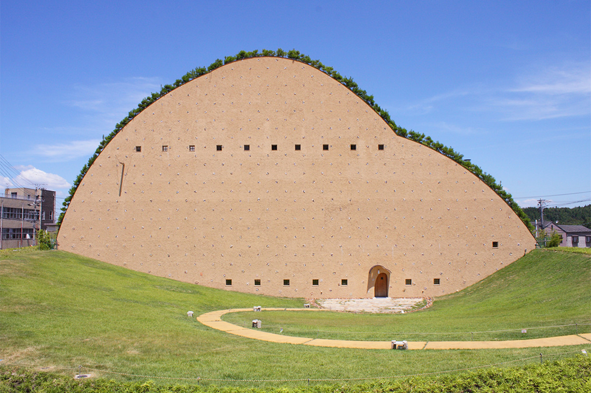
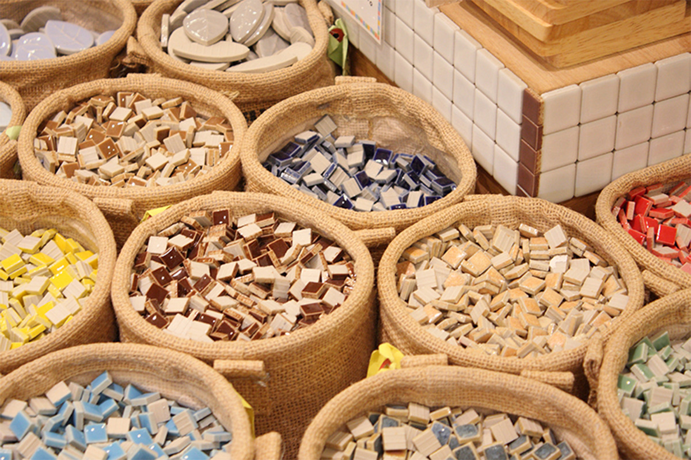
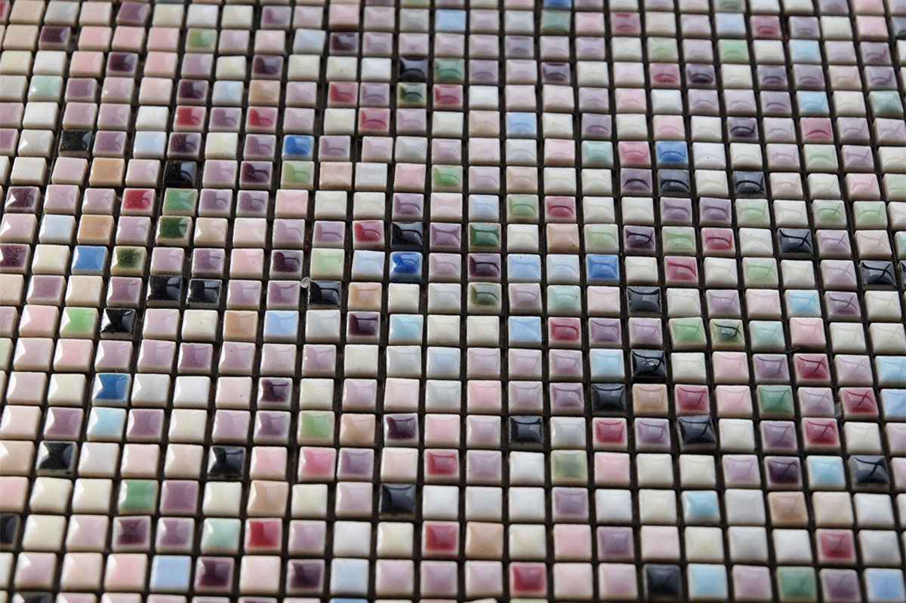
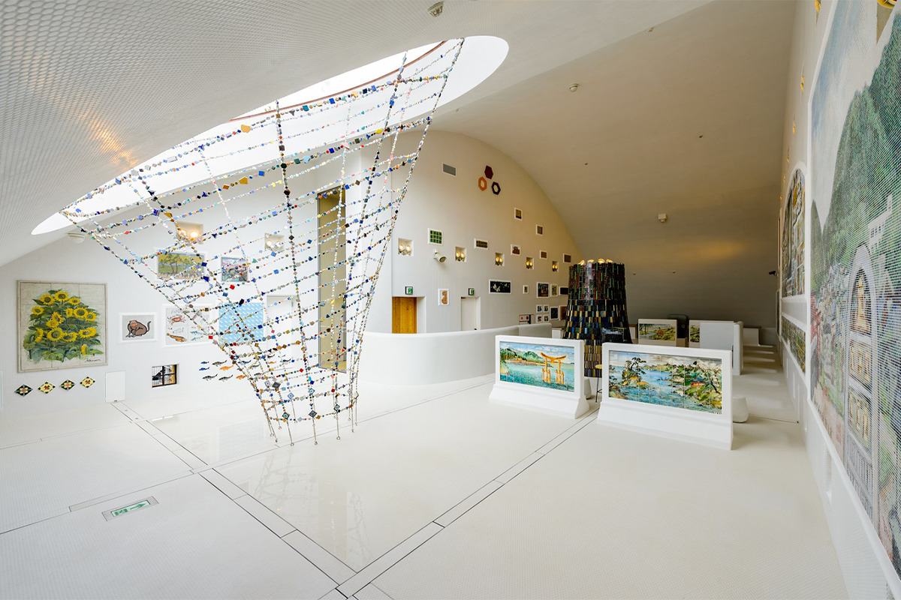
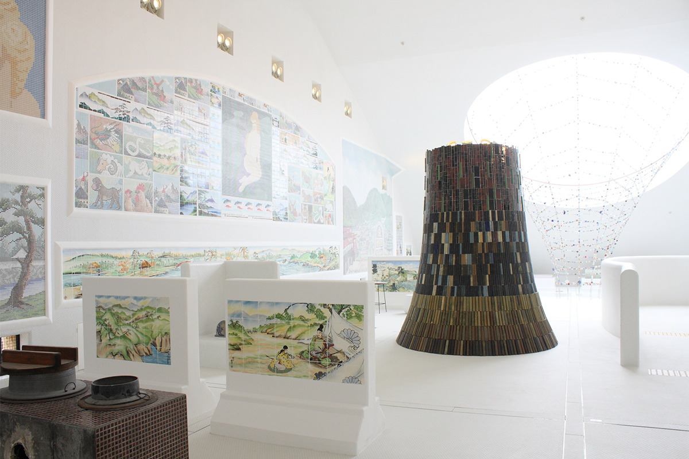
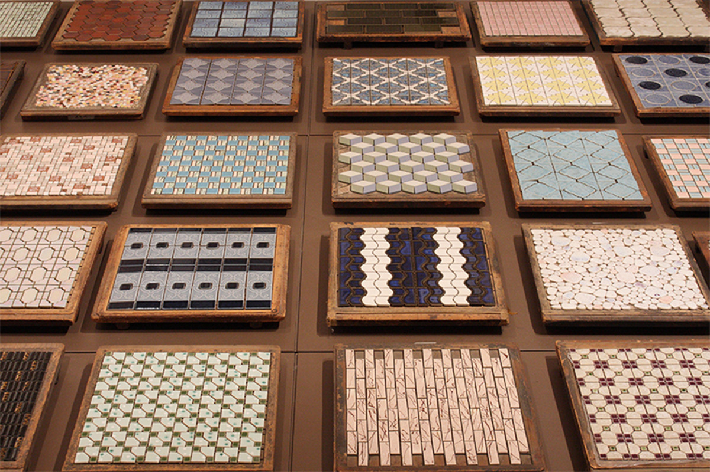
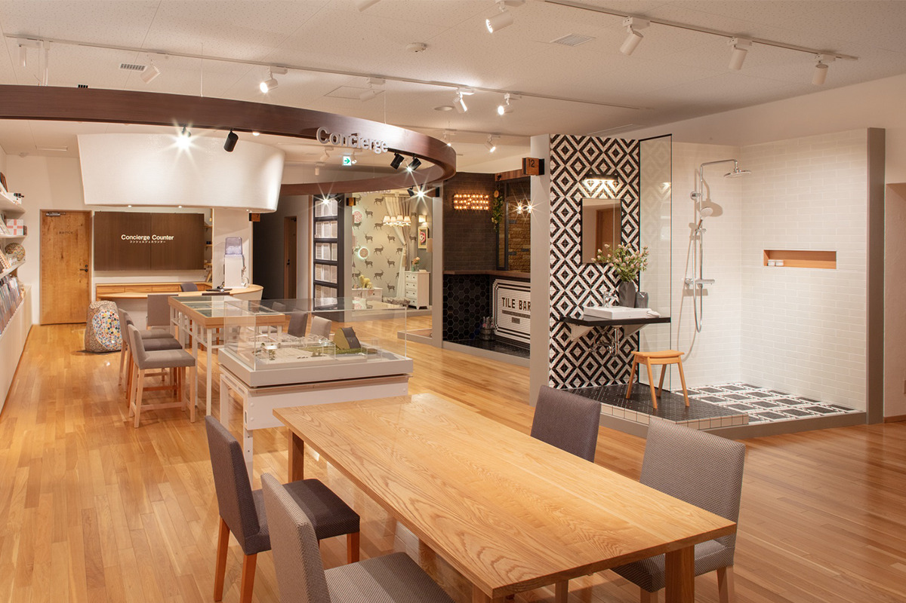
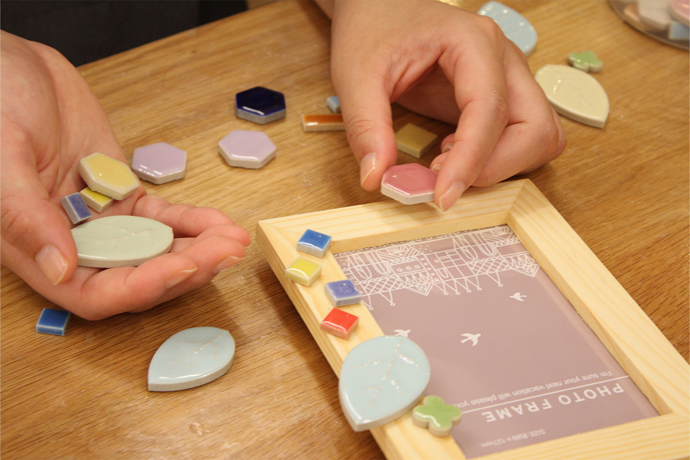
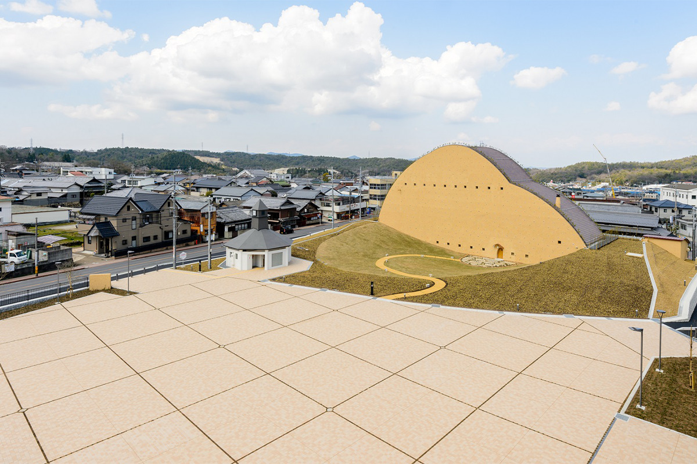

Префектура Гифу · Тадзими · музей
Музей мозаичной плитки в Тадзими: четыре этажа плитки в здании Тэрунобу Фудзимори

Квартал Касахара в городе Тадзими выпускает больше мозаичной плитки, чем любое другое место в Японии. Здесь стоит музей, где маленькие керамические квадратики из ванных и бань превращаются в целый мир цвета и формы.
История
Коллекция, которую собрал весь квартал
Мозаичная плитка, крошечные керамические пластинки, украшает дома не только в Японии, но и по всему миру. Её ценят за богатство цвета и занятные формы, а сочетаниям нет конца: каждый видит в узоре что-то своё.

Плиточное дело началось в эпоху Тайсё (1912–1926) в окрестностях старого городка Тадзими, а после войны его центром стала Касахара. Около 1995 года несколько энтузиастов из Касахары начали собирать мозаичную плитку. Коллекция росла понемногу больше двадцати лет и стала ценным собранием для всей местной промышленности.
Около 2011 года архитектор с мировым именем Тэрунобу Фудзимори проникся этой идеей и согласился спроектировать здание. Работа заняла примерно пять лет, и в июне 2016 года музей мозаичной плитки Тадзими открылся. Его задумали как музей, который будет расти, так же как из маленьких плиток складывается большая картина.
Основу экспозиции составляет огромное собрание образцов плитки, которое годами собирали сами производители. Музей опирается на знания отрасли в технологии, дизайне и разработке товаров, работает вместе с людьми из самых разных областей и так рассказывает миру о местном ремесле и его культуре.
Плитка
Что такое мозаичная плитка

Само слово «плитка» как общее название тонких керамических пластин для отделки зданий в Японии закрепили в 1922 году. Мозаичной по правилам считается плитка, у которой лицевая сторона не больше 50 квадратных сантиметров. Если видеть в ней керамическое украшение для зданий, из разных форм которого можно сложить любые узоры, её возможности далеко не исчерпаны.
В области Мино, прежде всего вокруг Касахары, сложилось разделение труда: свои специалисты занимаются сырьём, формовкой, обжигом, разработкой и продажей. Поэтому здешняя плитка так разнообразна и продумана по дизайну. С середины 1950-х до середины 1970-х её много вывозили за границу, и большая часть мозаичной плитки, которой отделывали дома в Японии и других странах, сделана именно здесь.
Этажи
Четыре этажа плитки
Музей интересен не только плиткой, но и самим зданием. По полутёмной большой лестнице поднимаешься на четвёртый этаж, открывается дверь, и перед тобой пространство, где пол, стены и потолок покрыты белой плиткой. На подставках и стенах собраны мозаичные панно, снятые со стен, картины из плитки из общественных бань, раковины и ванны, привезённые в основном из окрестностей, но и из других мест. Плитка, которая в эпоху Сёва (1926–1989) была частью самой обычной жизни, под руководством Фудзимори складывается в пространство, какого больше нигде не увидишь.


На третьем этаже рассказывают, как делают мозаичную плитку в Тадзими и как развивалось ремесло. Здесь есть хроника плиточной промышленности, ставшие редкостью образцы плитки эпохи Сёва и фильм о производстве и истории. В галерее рядом около трёх раз в год проходят тематические выставки о промышленности, истории или искусстве, и постоянную экспозицию меняют под их тему.

Второй этаж посвящён плитке, которая продаётся и сегодня. Как использовать её в доме, показывают на 16 сценах: каждый интерьер построен по проекту дизайнера, и видно, насколько плитка бывает разной. Понравившуюся плитку можно заказать у стойки консьержа.

В мастерской на первом этаже можно выбрать небольшой предмет и выложить его мозаикой из плитки разных цветов, форм и размеров, чтобы получилась вещь в единственном экземпляре. В магазине продают украшения и подставки для палочек из плитки, ту самую плитку, которой отделан музей, изделия местных производителей и собственные товары музея. Как применить такую плитку, подскажет фантазия.

Плитка давно стала частью повседневной жизни. В музее мозаичной плитки Тадзими можно увидеть и её историю, и новые изделия, и заново понять, чем она хороша.

Музей мозаичной плитки Тадзими
- Адрес
- префектура Гифу, Тадзими, Касахара-тё, 2082-5
- Телефон
- +81 572-43-5101
- Часы работы
- 9:00–17:00 (вход до 16:30)
- Выходные
- понедельник (если понедельник праздник, то следующий рабочий день), с 29 декабря по 3 января